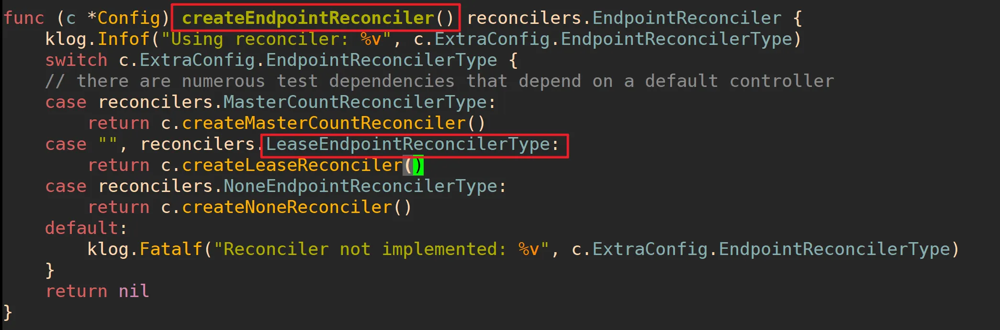
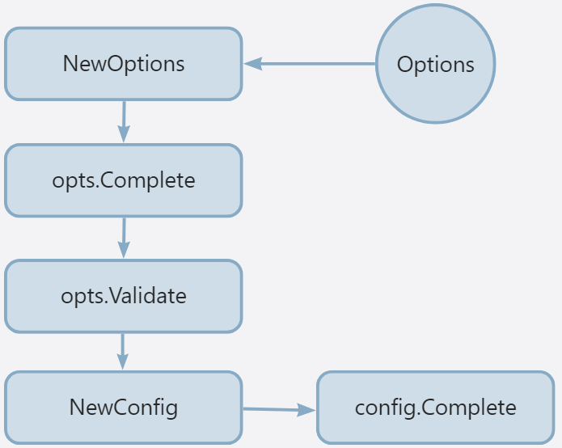
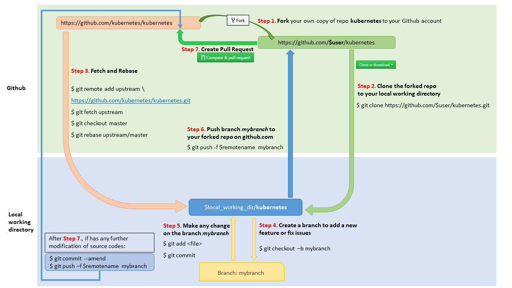

Kubernetes 仓库结构介绍
Kubernetes 源码量比较大，如果没有一个合理的仓库结构设计，维护起来会很困难。Kubernetes 社区在项目迭代过程中，也在不断优化项目的目录结构以适配最新的功能代码以及代码设计方法。
v1.30.2 版本中，Kubernetes 源码目录结构如下：
├── api/ # 存放 API 定义相关文件，例如：OpenAPI 文档
├── build/ # 包含了使用容器来构建 Kubernetes 组件的脚本
├── CHANGELOG/ # 存放 Kubernetes 的 CHANGELOG。master 分支会存放所有版本的CHANGELOG。在 tag 分支只会存放对应tag的CHANGELOG
├── cluster/ # 存放一些脚本和工具，用于创建、更新和管理Kubernetes集群
├── cmd # 存放Kubernetes的各种命令行工具的入口文件（即main文件），包括kubelet、kube-apiserver、kube-controller-manager、kube-scheduler等
├── docs # 存放设计、开发文档或用户文档等。为了精简 Kubernetes 仓库，docs目录下的文件已挪至https://github.com/kubernetes/community项目中
├── hack # 包含了一些脚本，这些脚本用来管理Kubernetes项目，例如：代码生成、组件安装、代码构建、代码测试等
│ ├── boilerplate # 各种类型文件的版权头信息。在生成代码时，对应文件类型的版权头信息取自该目录中对应的文件
│ ├── lib # 存放shell脚本库，包含一些通用的Shell函数
│ ├── make-rules # 存放 Makefile 文件
├── Makefile -> build/root/Makefile
├── _output # 保存一些构建产物或者其他临时文件
├── pkg # 存放大部分Kubernetes的核心代码。这里有API对象的定义、客户端库、认证/授权/审计机制、网络插件、存储插件等。这些代码可被项目内部或外部直接引用
│ ├── api # 包含了跟 API 相关的一些功能函数
│ ├── apis # 包含了 Kubernetes 中内置资源的定义、版本转换、默认值设置、参数校验等功能
│ ├── auth # 包含了授权相关的功能实现
│ ├── controller # 包含了kubernetes各类controller实现
│ ├── controlplane # 包含了kube-apiserver的核心实现
│ ├── credentialprovider
│ ├── features # 包含了kubernetes内置的feature gate
│ ├── generated # 包含了Kubernetes中所有的生成文件。当前只包含了openapi。但是该目录目的是存放更多的生成文件
│ ├── kubeapiserver # 包含了kube-apiserver相关的核心包，当前有adminssion初始化、认证、授权相关的包
│ ├── kubectl # kubectl 命令行工具具体实现
│ ├── kubelet # kubelet 具体实现
│ ├── kubemark # kubemark 具体实现
│ ├── printers # 实现 Kubernetes 对象的打印和显示功能
│ ├── probe # 管理 Kubernetes 的健康检查探针
│ ├── proxy # kube-proxy 具体实现
│ ├── registry # kube-apiserver核心代码实现，包含了资源的CURD、资源注册等
│ ├── scheduler # kube-scheduler 具体实现
│ ├── util # 提供一些通用的工具函数和辅助函数
│ ├── volume # 实现 Kubernetes 存储卷的管理
├── plugin # 存放Kubernetes的各种插件，包括网络插件、设备插件、调度插件、认证插件、授权插件等。这些插件使的Kubernetes更加灵活和强大
├── staging # 存放些即将被移动到其它仓库的代码
├── test # 存放测试工具及测试数据
├── third_party # 存放第三方工具、代码或其他组件
└── vendor # 存放项目依赖的库代码，一般为第三方库代码
Staging 目录
这里要特别介绍下 /staging 目录，很多刚开始看 kubernetes 源码的同学，对这个目录的命名和作用都有点不太明白。
staging 目录是一个暂存区，用来暂时保存未来会发布到其代码仓库的项目。暂存区中的项目会被publishing-bot 机器人定期同步到 k8s.io 组织中，作为 k8s.io 组织的一级项目而存在，其模块名为 k8s.io/xxx，例如 api 包的模块名如下：
// This is a generated file. Do not edit directly.
module k8s.io/api
go 1.23.0
将这些项目发布为 k8s.io 组织的一级项目，可以方便其他开发者的引用。要注意的是，这些代码虽然以独立项目发布，但是都在 kubernetes 主项目中维护，位于目录 kubernetes/staging/ ，这里面的代码代码被定期同步到各个独立项目中。
在 Go 项目中，我们如果要使用 api 包，引用的是其模块名：
package kubelet
import (
...
v1 "k8s.io/api/core/v1"
...
)
这里需要注意，虽然成为暂存区，但是 staging 目录下的项目是永久存在于 kubernetes 仓库中的，只不过未来会被发布到其自己的代码仓库中。
另外，Go 模块 k8s.io/api 其对应的 GitHub 仓库是 https://github.com/kubernetes/api。在实际执行 go get 命令时，go 工具会先访问 https://k8s.io/api，然后 k8s.io 服务器将模块下载地址转发到https://github.com/kubernetes/api。
staging 目录当前暂存了以下项目（为了方便表述，我后面会统称这些包为 staging 包）：
staging 目录中的代码是权威的，也就是说它是代码的唯一副本，如果你要对 k8s.io/api 包的代码进行变更，你只能修改 kubernetes/staging/src/k8s.io/api 目录下的代码。换句话说，k8s.io/api 仓库是只读的，你不能对其进行任何代码修改。
-
k8s.io/api这个仓库定义了 Kubernetes 的核心 API 对象（例如 Pod、Service、Deployment 等）。 -
k8s.io/apiextensions-apiserver这个仓库包含了 Kubernetes API 服务器扩展机制的代码，特别是自定义资源定义 (CustomResourceDefinitions, CRDs) 和聚合 API 服务器 (Aggregated API Servers)。它允许用户通过自定义资源和 API 来扩展 Kubernetes API。 -
k8s.io/apimachinery这是一个基础库，包含了许多 Kubernetes 组件共享的底层工具和通用类型。它包括：- 对象元数据和类型定义。
- Clientset 和 RESTClient 接口。
- 用于序列化和反序列化 API 对象的 Scheme 和编解码机制。
- 标签 (Labels) 和选择器 (Selectors)。
- 运行时对象接口。
-
k8s.io/apiserver包含了 Kubernetes API 服务器 (kube-apiserver) 的核心逻辑。 -
k8s.io/cli-runtime为与 Kubernetes 集群交互的命令行界面 (CLI) 工具提供了基础构建模块。 -
k8s.io/client-go官方的 Go 语言 Kubernetes 客户端库，用于与 Kubernetes 集群进行交互。使得开发人员能够轻松地编写基于 Kubernetes 的应用程序。 -
k8s.io/cloud-provider定义了将 Kubernetes 与各种云提供商（如 AWS、Azure、GCP 等）集成的接口和抽象。 -
k8s.io/cluster-bootstrap包含用于引导 Kubernetes 集群的工具和库。它专注于控制平面组件的初始设置和配置。 -
k8s.io/code-generator包含了用于自动生成各种 Kubernetes 组件的 Go 代码的脚本和工具 -
k8s.io/component-base为各种 Kubernetes 组件提供了基本构建模块和实用程序。 -
k8s.io/component-helpers提供了各种 Kubernetes 组件常用的执行特定任务的辅助函数和实用程序。 -
k8s.io/controller-manager提供了 Kubernetes 控制器管理器的核心功能。 -
k8s.io/cri-api容器运行时接口 (Container Runtime Interface, CRI)，这是一个抽象层，允许 Kubernetes 以一致的方式与不同的容器运行时（如 Docker、containerd、CRI-O）一起工作。 -
k8s.io/csi-translation-lib提供了 CSI（容器存储接口）到 Kubernetes 存储接口的转换功能。 -
k8s.io/dynamic-resource-allocation专注于开发与 Pod 的动态资源分配相关的功能，这是 Kubernetes 中更高级的资源管理能力。 -
k8s.io/endpointslice提供了 endpoint 资源的分片实现。endpointslice 可以更好地扩展和管理大规模的 Endpoints。 -
k8s.io/kms处理 Kubernetes 中的密钥管理服务 (Key Management Service, KMS) 集成，允许使用外部 KMS 提供程序对 etcd 中存储的敏感数据进行静态加密。 -
k8s.io/kube-aggregator包含 Kubernetes 中 API 聚合层的代码。它允许通过注册自定义 API 服务器来扩展 Kubernetes API。 -
k8s.io/kube-controller-managerKubernetes 核心组件之一，负责运行各种控制器。这些控制器负责维护集群的期望状态，如创建 Pod、确保 Deployment 的期望副本数、管理 Service 等。 -
k8s.io/kube-proxy包含了在每个节点上运行的kube-proxy网络代理的代码。它负责通过管理网络规则并将流量转发到后端 Pod 来实现 Service 抽象。 -
k8s.io/kube-scheduler包含了kube-scheduler组件的代码，该组件负责根据资源可用性、策略和其他约束来决定将新 Pod 放置在哪个节点上。 -
k8s.io/kubectl包含了kubectl命令行工具的源代码，这是用户与 Kubernetes 集群交互的主要方式。 -
k8s.io/kubelet包含了在集群中每个节点上运行的kubelet代理的代码。它负责管理该节点上的容器，确保它们按照其 Pod 规范中的定义运行。 -
k8s.io/metrics定义了 Kubernetes 中用于监控资源使用情况（例如 CPU、内存）的标准指标 API。 -
k8s.io/mount-utils提供了在 Linux 系统上执行挂载操作的实用函数，供各种 Kubernetes 组件（特别是处理存储的组件）使用。 -
k8s.io/pod-security-admission提供了 Pod 安全策略的实现，用于限制 Pod 的安全相关配置。可以帮助集群管理员实施 Pod 级别的安全策略。
staging 目录中的代码是权威的，也就是说它是代码的唯一副本，如果你要对 k8s.io/api 包的代码进行变更，你只能修改 kubernetes/staging/src/k8s.io/api 目录下的代码。换句话说，k8s.io/api 仓库是只读的，你不能对其进行任何代码修改。
Kubernetes 代码如何导入 staging 包？
staging 目录下的包，也会被 Kubernetes 仓库中的其他代码导入并使用，例如 pkg/kubelet/kubelet.go：
package kubelet
import (
...
"k8s.io/client-go/informers"
v1 "k8s.io/api/core/v1"
metav1 "k8s.io/apimachinery/pkg/apis/meta/v1"
"k8s.io/apimachinery/pkg/types"
"k8s.io/apimachinery/pkg/util/wait"
"k8s.io/klog/v2"
"k8s.io/kubernetes/pkg/api/v1/resource"
"k8s.io/kubernetes/pkg/features"
"k8s.io/kubernetes/pkg/kubelet/cadvisor"
...
)
因为，staging 目录下的项目模块名为 k8s.io/xxx，所以即使 kubernetes 代码需要用，也需要按模块名进行导入 k8s.io/xxx。但这时候，会出现一个问题，如果 kubernetes 需要添加 A 功能，这个功能涉及到 xxx 包的修改，这时候有 2 种方案：
- 先将 xxx 包发布到 k8s.io/xxx 仓库下，再来升级 kubernetes 仓库下 go.mod 文件中 k8s.io/xxx 包的版本，然后再开发A功能；
- 使用 Go 模块的包替代功能，直接将 k8s.io/xxx 替换为 staging 目录下的 xxx 模块。
方案 1 会有一个问题，直接把 xxx 的变更先发布到 k8s.io/xxx 仓库中，再开发 A 功能，如果在开发过程中，发现 xxx 包需要适配，就需要频繁的将适配的内容发布到 k8s.io/xxx 仓库中，会造成 k8s.io/xxx 仓库被频繁发布了不稳定的代码，不合理。
Kubernetes 选择了第 2 种方法，因为第 2 种方法最便捷，也最合理，例如 go.mod：
replace (
k8s.io/api => ./staging/src/k8s.io/api
k8s.io/apiextensions-apiserver => ./staging/src/k8s.io/apiextensions-apiserver
k8s.io/apimachinery => ./staging/src/k8s.io/apimachinery
k8s.io/apiserver => ./staging/src/k8s.io/apiserver
k8s.io/cli-runtime => ./staging/src/k8s.io/cli-runtime
k8s.io/client-go => ./staging/src/k8s.io/client-go
k8s.io/cloud-provider => ./staging/src/k8s.io/cloud-provider
k8s.io/cluster-bootstrap => ./staging/src/k8s.io/cluster-bootstrap
k8s.io/code-generator => ./staging/src/k8s.io/code-generator
k8s.io/component-base => ./staging/src/k8s.io/component-base
k8s.io/component-helpers => ./staging/src/k8s.io/component-helpers
k8s.io/controller-manager => ./staging/src/k8s.io/controller-manager
k8s.io/cri-api => ./staging/src/k8s.io/cri-api
k8s.io/csi-translation-lib => ./staging/src/k8s.io/csi-translation-lib
k8s.io/dynamic-resource-allocation => ./staging/src/k8s.io/dynamic-resource-allocation
k8s.io/endpointslice => ./staging/src/k8s.io/endpointslice
k8s.io/kms => ./staging/src/k8s.io/kms
k8s.io/kube-aggregator => ./staging/src/k8s.io/kube-aggregator
k8s.io/kube-controller-manager => ./staging/src/k8s.io/kube-controller-manager
k8s.io/kube-proxy => ./staging/src/k8s.io/kube-proxy
k8s.io/kube-scheduler => ./staging/src/k8s.io/kube-scheduler
k8s.io/kubectl => ./staging/src/k8s.io/kubectl
k8s.io/kubelet => ./staging/src/k8s.io/kubelet
k8s.io/legacy-cloud-providers => ./staging/src/k8s.io/legacy-cloud-providers
k8s.io/metrics => ./staging/src/k8s.io/metrics
k8s.io/mount-utils => ./staging/src/k8s.io/mount-utils
k8s.io/pod-security-admission => ./staging/src/k8s.io/pod-security-admission
k8s.io/sample-apiserver => ./staging/src/k8s.io/sample-apiserver
k8s.io/sample-cli-plugin => ./staging/src/k8s.io/sample-cli-plugin
k8s.io/sample-controller => ./staging/src/k8s.io/sample-controller
)
如果你是用的 vendor 机制，你会发现 vendor/k8s.io/api 目录也被作了软连接：
vendor/k8s.io/api -> ../../staging/src/k8s.io/api
如何根据 kubernetes v1.30.2 查找 staging 包的版本？
我们基于 Kubernetes v1.30.2 来进行讲解，Kubernetes 会依赖 staging 包，在 kubernetes 包中，对 staging 包的依赖配置如下：
$ grep -w k8s.io/api go.mod
k8s.io/api v0.0.0
k8s.io/api => ./staging/src/k8s.io/api
可以看到，go.mod 中并没有配置 k8s.io/api 包的版本。那么，我们如何知道 kubernetes v1.30.2 所依赖 k8s.io/api 包的具体发布版本呢？
了解版本映射很重要，因为如果第三方项目需要引用 kubernetes 包及 staging 包，是需要指明版本的，如果 kubernetes 包、staging 包之间的版本不匹配，会带来很多兼容性问题。
cmd/ 目录下组件介绍
Kubernetes cmd/ 目录下有很多组件，v1.30.2 版本下，cmd/ 目录下有 27 个组件（也即有 27 个 main 文件）。这些组件按功能大概可以分为以下几类：
-
Kubernetes 控制面组件（核心组件）：
- kube-apiserver
- kube-controller-manager
- cloud-controller-manager
- kube-scheduler
- kubelet
- kube-proxy
-
Kubernetes客户端工具：
- kubeadm
- kubectl
-
辅助工具：
- clicheck
- genkubedocs
- gendocs
- genman
- genswaggertypedocs
- genyaml
- kubectl-convert
- kubemark
-
其它
- dependencycheck
- dependencyverifier
- genutils
- fieldnamedocscheck
- prune-junit-xml
- importverifier
- preferredimports
- import-boss
- gotemplate
3 个易混淆的 API 包
在阅读 Kuberneets 源码或者进行 Kubernetes 编程过程中经常会引用以下 3 个包：
- k8s.io/api；
- kubernetes/pkg/api；
- kubernetes/pkg/apis。
这三个包都与 Kubernetes API 相关，但在功能和位置上有所不同：
-
k8s.io/api：该包包含了 Kubernetes 内置资源对象的结构体定义，以及与这些资源对象相关的操作和状态。
- **操作：**该包涉及的操作主要包括针对每种资源对象的 Marshal、Unmarshal、DeepCopy()、DeepCopyObject、DeepCopyInto、String。例如，DaemonSet 资源具有以下操作：
generated.pb.go:func (m *DaemonSet) Reset() { *m = DaemonSet{} } generated.pb.go:func (*DaemonSet) ProtoMessage() {} generated.pb.go:func (*DaemonSet) Descriptor() ([]byte, []int) { generated.pb.go:func (m *DaemonSet) XXX_Unmarshal(b []byte) error { generated.pb.go:func (m *DaemonSet) XXX_Marshal(b []byte, deterministic bool) ([]byte, error) { generated.pb.go:func (m *DaemonSet) XXX_Merge(src proto.Message) { generated.pb.go:func (m *DaemonSet) XXX_Size() int { generated.pb.go:func (m *DaemonSet) XXX_DiscardUnknown() { generated.pb.go:func (m *DaemonSet) Marshal() (dAtA []byte, err error) { generated.pb.go:func (m *DaemonSet) MarshalTo(dAtA []byte) (int, error) { generated.pb.go:func (m *DaemonSet) MarshalToSizedBuffer(dAtA []byte) (int, error) { generated.pb.go:func (m *DaemonSet) Size() (n int) { generated.pb.go:func (this *DaemonSet) String() string { generated.pb.go:func (m *DaemonSet) Unmarshal(dAtA []byte) error { zz_generated.deepcopy.go:func (in *DaemonSet) DeepCopyInto(out *DaemonSet) { zz_generated.deepcopy.go:func (in *DaemonSet) DeepCopy() *DaemonSet { zz_generated.deepcopy.go:func (in *DaemonSet) DeepCopyObject() runtime.Object { zz_generated.prerelease-lifecycle.go:func (in *DaemonSet) APILifecycleIntroduced() (major, minor int) { zz_generated.prerelease-lifecycle.go:func (in *DaemonSet) APILifecycleDeprecated() (major, minor int) { zz_generated.prerelease-lifecycle.go:func (in *DaemonSet) APILifecycleReplacement() schema.GroupVersionKind { zz_generated.prerelease-lifecycle.go:func (in *DaemonSet) APILifecycleRemoved() (major, minor int) {- **状态：**涉及的资源状态，主要是 XXXConditionType。例如 Pod 资源对象具有以下状态：
// These are built-in conditions of pod. An application may use a custom condition not listed here.
const (
// ContainersReady indicates whether all containers in the pod are ready.
ContainersReady PodConditionType = "ContainersReady"
// PodInitialized means that all init containers in the pod have started successfully.
PodInitialized PodConditionType = "Initialized"
// PodReady means the pod is able to service requests and should be added to the
// load balancing pools of all matching services.
PodReady PodConditionType = "Ready"
// PodScheduled represents status of the scheduling process for this pod.
PodScheduled PodConditionType = "PodScheduled"
// DisruptionTarget indicates the pod is about to be terminated due to a
// disruption (such as preemption, eviction API or garbage-collection).
DisruptionTarget PodConditionType = "DisruptionTarget"
)
- kubernetes/pkg/api: 该包包含了一些核心资源对象 utill 类型的函数定义。
- kubernetes/pkg/apis: 与 k8s.io/api 包内容类似，也包含了 Kubernetes 内置资源对象的结构体定义。但是这个项目只建议被 Kubernetes 内部引用，如果外部项目引用建议使用 k8s.io/api。而且 Kubernetes 内置代码也有很多引用了 k8s.io/api 下面的 api，所以后面可能都会迁移至 k8s.io/api 项目下。
Kubernetes 中的 API 被组织为多个 API 组，每个 API 组都有自己的版本和资源对象。每个 API 组通常对应一个子目录，每一个版本又对应一个子目录，在版本子目录下包含了该版本的资源对象的结构体定义、状态定义和相关的方法。例如 kubernetes/pkg/apis/ 目录下的资源组和版本的目录结构如下：
kubernetes/pkg/apis
├── ...
├── apps # apps 资源组
│ ├── doc.go
│ ├── fuzzer/
│ ├── install/
│ ├── register.go
│ ├── types.go
│ ├── v1/ # v1版本
│ ├── v1beta1/ # v1beta1 版本
│ ├── v1beta2/ # v1beta2 版本
│ ├── validation/
│ └── zz_generated.deepcopy.go
├── ...
├── core # core 资源组（也叫核心资源组）
│ ├── annotation_key_constants.go
│ ├── doc.go
│ ├── fuzzer/
│ ├── helper/
│ ├── install/
│ ├── json.go
│ ├── objectreference.go
│ ├── pods/
│ ├── register.go
│ ├── resource.go
│ ├── taint.go
│ ├── toleration.go
│ ├── types.go
│ ├── v1/ # v1 版本
│ ├── validation/
│ └── zz_generated.deepcopy.go
Kubernetes 源码结构设计特点
因为我阅读 Kubernetes 源码有一段时间了，这里来分享下，我阅读 Kubernetes 过程中觉得一些好的、值得我们借鉴的特点。
特点 1：代码架构在不断更新优化中
我从 2019 年开始阅读 Kubernetes 源码，每隔一段时间都会去重新翻一翻 Kubernetes 的源码，到现在已经有 4 个年头。 这 4 年中，给我感受比较深的是 Kubernetes 源码，每隔一段时间都会有一次大的改动，这种改动甚至可以说是从机制上的重构，例如：
代码生成机制的变化：在 Kubernetes v1.25.9 版本中，Kubernetes 生成 client-go、informer、lister、deepcopy 等代码用的还是 Makefile 的 generated_files规则，而到了 v1.30.2 版本，代码生成机制已经改了，用的是 hack/update-codegen.sh脚本，这 2 个版本时间间隔仅仅隔了 2 个月 24 天。
另外，kube-apiserver 组件、kube-controller-mananger 等组件的代码也一直在不断地大改或者小改。这些改动都是朝着一个目标去：更加标准、更加规范、更加可扩展、代码/脚本复用性也越来越高；
Kubernetes 源码的目录结构，也在随着版本的迭代不断改动；
Kubernetes 源码中的小改动，包括注释等也都在不断地被优化。
所以，在我们自己的项目开发中，代码重构、代码优化也是要一直进行的。只有不断重构、优化我们的项目代码，项目质量才会变得越来越高。因为随着新功能的增加，为了能够让代码架构更好的容纳新功能，适配旧代码时不可避免的。
特点 2：注释很详尽
在我的 Go 项目开发生涯中，发现很多开发者其实不太注重代码注释，我觉得原因有以下 2 个：
没有代码注释的编码习惯，或者没有意识到代码注释对代码可阅读性的重要作用；
项目进度比较赶，忙于需求的开发、Bug 的修复，没有时间为代码编写注释。
其实，在 Go 项目开发中，代码注释很重要，而且注释代码并不需要花费很多时间，尤其现在随着各类 LLM 能力的增强，我们甚至可以将代码扔给 LLM，让 LLM 给你添加注释，然后，我们基于这些注释进行优化。代码注释对于代码质量的提升帮助很大，也很能体现出来你的开发素养。所以，在 Go 项目开发中，也建议像 Kubernetes 一样，给代码加上详尽的注释，至少一些重要的代码，我们要加上注释。
特点 3：单测用例很全
Kubernetes 源码目录下有很多单元测试代码，这些单元测试代码并不是为了提高单测覆盖率而编写的 KPI 代码，而是真的在为一个函数、一个功能编写详尽的单元测试用例，以提高代码的质量。Kubernetes 源码目录下很多单测用例是比较复杂的，看的出来开发者编写这些单测用例也花费了不少时间。
在我们的 Go 项目开发中，也建议花点时间，补充一些单元测试用例，通过单元测试用例来提高我们的代码质量。让编写单测用例养成一种习惯。
特点 4：Kubernetes 的函数名、变量名、包名有时候会很长
例如，下面是一段 Kubernetes 代码（见 pkg/controlplane/instance.go）：

可以看到，在 Kubernetes 源码中，变量、函数、包名的可读性要比简洁性更加重要。
特点 5：代码结构清晰
Kubernetes 源码中，有很多结构清晰的代码。最典型的就是应用构建结构。Kubernetes 核心组件的应用构建结构一般是相同的，结构如下：

从应用构建架构，可以看到，Kubernetes 开发者，期望整个项目的源码具有合理、清晰的结构，以此提高代码的可读性和可维护性。
特点 6：几乎每个目录下都有一个 OWNERS 文件
Kubernetes 源码目录下的 OWNERS 文件最初是参考Chromium OWNERS files的机制，用于定义代码库中不同文件或目录的维护者（Owners）。当前 OWNER 文件主要用来在代码审查阶段，指定 reviewer 和 approver。以下是一个 OWNERS 文件样例：
options:
# make root approval non-recursive
no_parent_owners: true
reviewers:
- dchen1107
- dims
approvers:
- dims
- liggitt
emeritus_approvers:
- lavalamp
可以看到，Kubernetes 源码功能很多，不同功能由不同的开发者维护，通过 OWNERS 文件，可以更加精细化的指定代码审查是的 reviewer 和 approver。
关于 OWNERS 文件的更多介绍见：owners。
特点 7：代码非常规范、结构化
Kubernetes 项目的代码是非常规范的、结构化的。在 Kubernetes 的开发规范中，不仅会对日志、错误等常见的开发规范进行规范性约束，还会对 Kubernetes 的其他内容进行规范性约束。例如，Kubernetes 会约束 Shell 脚本的函数命名，命名格式统一为 kube::xxx:yyy：
kube：说明该函数是 Kubernetes 的 bash 函数；
xxx：模块，指定了 bash 函数所属的功能模块，例如：log、util等。
yyy：函数名，而且函数名统一使用蛇形命名；
下面是 Kubernetes 中 bash 函数的命名示例：
kube::golang::setup_env
kube::util::require-jq
Kubernetes 源码结构化也体现在很多地方。例如统一使用 hack/verify-xxx.sh脚本进行预提交验证。当预提交验证失败后，会有对应的 hack/update-xxx.sh脚本来修复。
Kubernetes 源码结构化的另外一个体现点是，hack目录下的 bash 脚本，这些 bash 脚本都引用了 hack/lib/目录下的 bash 库。其实在很多开源项目中，甚至是一些非常知名的开源项目中，很少结构化的 bash 脚本。
如何阅读 Kubernetes 源码
阅读 Kubernetes 源码是一项具有挑战性的任务，因为 Kubernetes 是一个大型且复杂的项目。所以，在开始阅读 Kubernetes 源码之前，我们还需要知道如何高效的阅读 Kubernetes 源码。下面是我阅读 Kubernetes 源码的方法，供你借鉴。
阅读 Kubernetes 源码方法：
- **学习 Kubernetes 开发者文档：**你可以通过阅读 Kubernetes开发者文档，来学习 Kubernetes 的源码结构、开发方式、开发规范、源码贡献方式等；
- **学会编译、部署 Kubernetes 源码：**这是阅读 Kubernetes 源码最重要的开始，干读源码，学习效果是很差的。我们需要边阅读、边魔改、边测试。下一节课，会详细介绍如何编译、魔改、测试 Kubernetes 源码；
- **选择一个组件：**Kubernetes 有很多核心组件，我们需要选择一个组件定点阅读。这里，我建议的阅读顺序如下：kube-sheduler、kube-apiserver、kube-controller-mananger、kube-proxy、kubelet。为什么推荐先阅读 kube-scheduler 呢？这是因为 Kubernetes 调度器不仅仅是 Kubernetes 的核心组件，还是企业使用 Kubernetes 过程中，魔改最多、工作岗位最多的岗位。所以，学好 kube-scheduler 对你未来的职业发展也是有帮助的。另外，本套课程也会详细介绍 kube-scheduler 组件的源码实现；
- **从 main 函数开始：**当你选择好一个 Kubernetes 组件后，接下来就可以进入阅读阶段。你可以从 cmd/目录下找到该组件的 main 函数，并从 main 函数，按着代码逻辑流程，去过一遍整个组件的代码；
- **开发一个 Kubernetes 扩展：**Kubernetes 最大的特性就是扩展性极强。你可以尝试给 Kubernetes 贡献一个扩展，来加深你对 Kubernetes 源码、Kubernetes 运行机制、生态的掌握。你可以贡献一个 CSI、CRI、CNI。这里建议你贡献一个 CSI，因为 CSI 实现难度适中，又能让你较好的理解 Kubernetes 源码。
- **开发一个调度器：**编写一个扩展，能够加深你对 Kubernetes 源码的掌握，但是掌握的知识点范围还是有限的。如果你想进一步扩大对 Kubernetes 源码、运行机制等的学习、掌握等，你可以尝试开发一个 Kubernetes 调度器。
如何给 Kubernetes贡献源码？
如果你想学习 Kubernetes 源码，其中一个有效的方法是尝试给 Kubernetes 贡献源码。Kubernetes 有相近的文档，包括详尽的代码贡献流程和贡献方法，这里我罗列出来供你参考：
-
Making your First Contribution：介绍，作为新手如何给 Kubernetes 贡献第一个 PR。文档中，介绍了一些可以贡献的点：
- 帮助改进 Kubernetes 文档；
- 修复注释、命名不规范的、或者错误的地方；
- 编写单元测试用例；
- 帮助分类 Issue；
- 修复一个 Bug。
-
Contributing：介绍源码贡献流程，其中包括 GitHub 工作流流程、PR 流程、CR 流程等；
-
Github Flow：详细介绍了具体如何遵循 GitHub Flow 给 Kubernetes 贡献源码。GitHub Flow 流程如下：

给 Kubernetes 贡献源码最简单的方法是修复一个英文 Typo，更正一个函数注释等文档类的贡献。Kubernetes 源码中存在大量的英文 typo、注释错误，大家如果感兴趣，可以找一两个尝试贡献下。
另外，Kubernetes 的 GitHub Flow 流程，也是开源项目标准的流程，在你的项目开发中，也完全可以借鉴 Kubernetes 的 GitHub Flow 工作流步骤。
Kubernetes 相关文档
为了，让你更好的学习 Kubernetes 源码，并熟悉 Kubernetes，这里推荐一些 Kubernetes 阅读资料：
- Kubernetes 官方文档：官方文档，主要面向于使用者。如果你有时间，建议把官方文档都阅读一遍；
- Kubernetes 中文文档：官方文档的中文翻译，建议直接阅读官方文档；
- Kubernetes 社区文档：包含了 Kubernetes 的开发文档、开发规范、方案设计等文档，相比于官方文档，更多面向于开发者。建议过一遍社区文档，其中有很多文档，对我们的项目开发很有帮助；
- design-proposals-archive：介绍 Kubernetes 功能设计时的一些提案，对了解 Kubernetes 功能设计背后的思考非常有帮助；
- Kubernetes权威指南：从Docker到Kubernetes实践全接触（第6版）：学习 Kubernetes 必读的一本书，分为第六版分为上下 2 册。